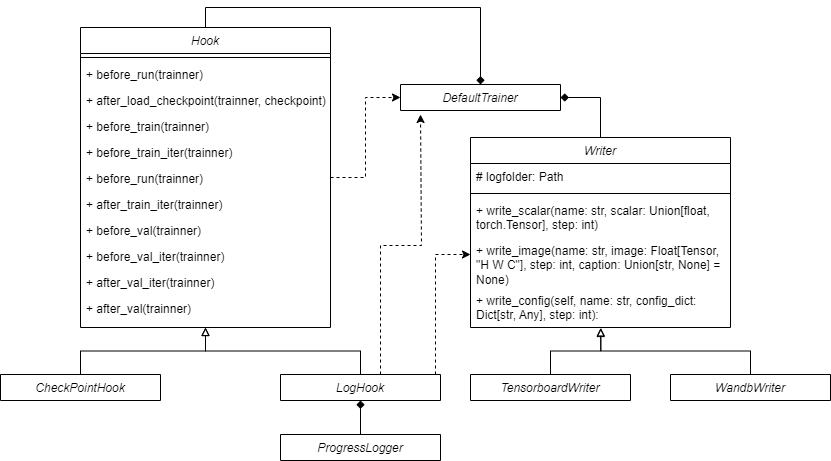

Hook#
Hook module can be used as a tool class to take some actions to Trainer in some fixed time point. the CheckPointHook and LogHook are two example Hook derived from base class, which are used to save the checkpoint during the training loop and to log the training and validation losses, respectively.

LogHook relies on a Console object named Logger to print some log information in the terminal, a ProgressLogger object to visualize the training progress. And it will call the trainer’s writer to record log information during in indicated timepoint.
For a writer binded with trainer, it should be inherited from base class Writer, and write_scalar(), write_image() and write_config(), these three abstract functions have to be accomplished. You can create more types of Writer. For instance, TensorboardWriter encapsulates torch.utils.tensorboard.SummaryWrite by overriding those three interface functions. You can also indicate the type of writer you want to use in .yamlconfiguration file, conveniently.
Where to use#
In trainer, the hook function will be called at the specific position:
1class DefaultTrainer:
2 """
3 The default trainer class for training and testing the model.
4
5 Parameters
6 ----------
7 cfg : dict
8 The configuration dictionary.
9 exp_dir : str
10 The experiment directory.
11 device : str, optional
12 The device to use, by default "cuda".
13 """
14 def __init__(self, cfg: Config, exp_dir: Path, device: str = "cuda") -> None:
15 super().__init__()
16 self.exp_dir = exp_dir
17 self.device = device
18
19 self.start_steps = 1
20 self.global_step = 0
21
22 # build config
23 self.cfg = parse_structured(self.Config, cfg)
24 # build hooks
25 self.hooks = parse_hooks(self.cfg.hooks)
26 self.call_hook("before_run")
27 # build datapipeline
28
29 # some code are ignored
30
31 @torch.no_grad()
32 def validation(self):
33 self.val_dataset_size = len(self.datapipeline.validation_dataset)
34 for i in range(0, self.val_dataset_size):
35 self.call_hook("before_val_iter")
36 batch = self.datapipeline.next_val(i)
37 render_dict = self.model(batch)
38 render_results = self.renderer.render_batch(render_dict, batch)
39 self.metric_dict = self.model.get_metric_dict(render_results, batch)
40 self.call_hook("after_val_iter")
41
42 def train_loop(self) -> None:
43 """
44 The training loop for the model.
45 """
46 loop_range = range(self.start_steps, self.cfg.max_steps+1)
47 self.global_step = self.start_steps
48 self.call_hook("before_train")
49 for iteration in loop_range:
50 self.call_hook("before_train_iter")
51 batch = self.datapipeline.next_train(self.global_step)
52 self.renderer.update_sh_degree(iteration)
53 self.schedulers.step(self.global_step, self.optimizer)
54 self.train_step(batch)
55 self.optimizer.update_model(**self.optimizer_dict)
56 self.call_hook("after_train_iter")
57 self.global_step += 1
58 if iteration % self.cfg.val_interval == 0 or iteration == self.cfg.max_steps:
59 self.call_hook("before_val")
60 self.validation()
61 self.call_hook("after_val")
62 self.call_hook("after_train")
63
64 def call_hook(self, fn_name: str, **kwargs) -> None:
65 """
66 Call the hook method.
67
68 Parameters
69 ----------
70 fn_name : str
71 The hook method name.
72 kwargs : dict
73 The keyword arguments.
74 """
75 for hook in self.hooks:
76 # support adding additional custom hook methods
77 if hasattr(hook, fn_name):
78 try:
79 getattr(hook, fn_name)(self, **kwargs)
80 except TypeError as e:
81 raise TypeError(f'{e} in {hook}') from None
More Types of Hook#
You can modify trainer progress by define hook function, for example, if you want log something after train iteration:
Note
The trainer can be fully accessed in the hook function. We provide log hook and checkpoint hook by default.
@HOOK_REGISTRY.register()
class LogHook(Hook):
"""
A hook to log the training and validation losses.
"""
def __init__(self):
self.ema_loss_for_log = 0.
self.bar_info = {}
self.losses_test = {"L1_loss": 0., "psnr": 0., "ssims": 0., "lpips": 0.}
def after_train_iter(self, trainner) -> None:
"""
some operations after the training iteration ends.
Parameters
----------
trainner : Trainer
The trainer object.
"""
for param_group in trainner.optimizer.param_groups:
name = param_group['name']
if name == "point_cloud." + "position":
pos_lr = param_group['lr']
break
log_dict = {
"num_pt": len(trainner.model.point_cloud),
"pos_lr": pos_lr
}
log_dict.update(trainner.loss_dict)
for key, value in log_dict.items():
if key == 'loss':
self.ema_loss_for_log = 0.4 * value.item() + 0.6 * self.ema_loss_for_log
self.bar_info.update(
{key: f"{self.ema_loss_for_log:.{7}f}"})
if trainner.logger and key != "optimizer_params":
trainner.logger.write_scalar(key, value, trainner.global_step)
You can refer to tutorial part or Method part for more examples for hook function.